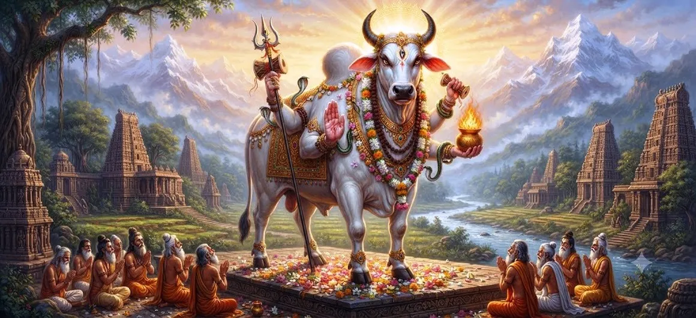

The Bull Incarnation of Shiva
Chapter 23 of the Shatarudra Samhita presents the sacred account of the Bull Incarnation of Lord Shiva. In this divine manifestation, Shiva appears in the powerful form of a bull, revealing another aspect of his boundless divine activity.
The bull is traditionally associated with strength, steadiness, righteousness, endurance, and sacred service. Through this incarnation, the narrative presents the Lord's power working within the divine order and protecting what is sacred.
The chapter continues the sequence of Shiva's manifestations and prepares the reader for the Pippalada Incarnation described in the following chapter.
Chapter 23 Highlights
The Bull Incarnation
Explores Shiva's manifestation in the powerful and sacred form of a bull.
Divine Power
Reveals another expression of Shiva's limitless divine power.
Righteousness
The bull becomes a symbol through which strength and righteousness are contemplated together.
Protection
Reflects Shiva's role as protector of sacred order and divine principles.
Devotion and Service
Encourages devotion expressed through disciplined and selfless service.
Steadfastness
Invites reflection on patience, endurance, stability, and spiritual strength.
Core Topics in This Chapter
- 01 Introduction to the Bull Incarnation →
- 02 The Divine Manifestation of Shiva →
- 03 The Sacred Significance of the Bull Form →
- 04 Strength Guided by Dharma →
- 05 Divine Protection and Sacred Order →
- 06 Spiritual Lessons →
- 07 Devotion, Discipline, and Service →
- 08 Connection with the Previous Narrative →
- 09 Transition to the Pippalada Incarnation →
- 10 Reflection on Chapter 23 →
Introduction to the Bull Incarnation
The Bull Incarnation represents another remarkable manifestation of Lord Shiva within the sacred sequence of the Shatarudra Samhita. Through the form of the bull, the Lord reveals strength, stability, endurance, and the power to uphold the sacred order.
The incarnation demonstrates that the Supreme Lord is not limited to one particular appearance. According to divine purpose, Shiva may assume forms suited to the circumstances and the protection of sacred principles.
The Divine Manifestation of Shiva
Shiva's incarnations are expressions of divine freedom and compassion. The Bull Incarnation continues this pattern by presenting the Lord in a form associated with immense physical power and unwavering steadiness.
The divine form should therefore be understood not merely as an outward transformation but as a manifestation of a particular divine purpose.
The Sacred Significance of the Bull Form
The bull carries a powerful symbolic presence in Shaiva tradition. Nandi, the sacred bull associated with Shiva, represents devotion, strength, loyalty, patience, and service before the Lord.
The Bull Incarnation allows the devotee to contemplate these qualities in relation to Shiva's own divine power and protective role.
Strength becomes spiritually meaningful when it is governed by righteousness, restraint, and service.
Strength Guided by Dharma
The bull is a natural symbol of physical strength, yet the spiritual message is deeper. Strength without discipline can become destructive, while strength governed by dharma becomes a means of protection and service.
Shiva's Bull Incarnation therefore provides a contemplative image of power that remains aligned with the sacred order.
Divine Protection and Sacred Order
The previous chapter described the disturbance involving Vishnu's sons. The Bull Incarnation continues the wider sequence in which the divine presence appears whenever sacred principles and cosmic harmony require protection.
Divine protection does not always appear in the same form. The Lord assumes the form appropriate to the divine purpose, demonstrating that sacred order can be upheld through many expressions of divine power.
Spiritual Lessons
One of the central reflections suggested by the Bull Incarnation is that true strength must be accompanied by steadiness and self-control. Spiritual strength is not simply the ability to overcome an opponent.
It is the ability to remain firm in righteousness, protect what is sacred, and act without being controlled by pride or anger.
The chapter therefore encourages devotees to cultivate courage along with humility and devotion.
Devotion, Discipline, and Service
The sacred bull is closely connected with the ideal of devoted service. A devotee's spiritual progress likewise depends upon disciplined action, sincere worship, patience, and humility.
Service becomes sacred when it is performed without selfish pride and offered as an expression of devotion to Mahadeva.
Connection with the Previous Narrative
Chapter 22 presented the narrative of the harassment by Vishnu's sons. Chapter 23 continues the sequence of divine manifestations by turning toward another powerful form of Shiva.
The transition demonstrates the continuing movement of the Shatarudra Samhita from one sacred event and manifestation to another while maintaining its central focus on the glory and divine activity of Shiva.
Transition to the Pippalada Incarnation
The sacred sequence now moves toward the Pippalada Incarnation of Shiva. As with the other manifestations described in the Samhita, the next incarnation reveals another dimension of the Lord's divine purpose.
The reader is therefore invited to continue the journey and explore how Shiva manifests again in response to divine purpose and sacred circumstances.
Reflection on Chapter 23
The Bull Incarnation invites devotees to contemplate strength that is steady, disciplined, protective, and devoted to righteousness. The strongest person is not necessarily the one who displays the greatest force, but the one who can control that force and direct it toward a noble purpose.
Through this contemplation, the devotee may cultivate courage without arrogance, strength without cruelty, and devotion expressed through service.
Key Teachings of Chapter 23
Steadfast Strength
True strength remains steady even when circumstances become difficult.
Dharma
Power becomes sacred when it serves righteousness.
Humility
Spiritual power should always remain free from arrogance.
Protection
Strength finds its highest purpose in protecting the sacred.
Endurance
Patience and endurance are essential qualities on the spiritual path.
Faith in Shiva
Devotion to Mahadeva gives strength and direction to the spiritual journey.
Spiritual Reflection
The Bull Incarnation of Shiva offers a powerful meditation on strength guided by righteousness. The bull's qualities of stability, endurance, and power can be contemplated as spiritual virtues when they are joined with humility and devotion. The devotee is reminded that strength should not become a source of pride. Instead, it should be placed in the service of dharma, protection, compassion, and the sacred order. In this way, the divine form becomes a reminder that spiritual strength is most meaningful when it is controlled, purposeful, and devoted to Mahadeva.
Living the Message of Chapter 23
The message of the Bull Incarnation can be applied in daily life by developing patience, discipline, courage, and responsibility.
When faced with difficulty, one can remain steady instead of reacting impulsively. When given strength or authority, one can use it to protect and serve rather than dominate.
Such conduct transforms ordinary strength into a form of spiritual discipline.
Key Spiritual Concepts
The Supreme Lord who manifests in diverse forms according to divine purpose.
The sacred bull form associated with strength, steadiness, endurance, and service.
Righteousness that gives direction and purpose to strength.
Loving devotion expressed through faith, discipline, and service.
Divine power working according to the purpose of the Supreme Lord.
Selfless service offered with humility and devotion.
Chapter Summary
Shatarudra Samhita Chapter 23 presents the Bull Incarnation of Lord Shiva. The sacred form of the bull provides a powerful image of divine strength, steadiness, endurance, righteousness, protection, and service. The chapter continues the sequence of Shiva's divine manifestations following the narrative of Vishnu's sons and prepares the reader for the Pippalada Incarnation in the next chapter. Its spiritual message encourages devotees to cultivate strength without arrogance, courage with humility, and power guided by dharma and devotion.
Frequently Asked Questions
① What is the main subject of Chapter 23?
The main subject is the Bull Incarnation of Lord Shiva and the spiritual significance associated with this divine manifestation.
② What does the bull symbolize in this chapter?
The bull can be contemplated as a symbol of strength, stability, endurance, righteousness, devotion, and sacred service.
③ What spiritual lesson does the Bull Incarnation teach?
It encourages devotees to develop strength and courage while remaining humble, disciplined, patient, and devoted to dharma.
④ How does Chapter 23 connect with Chapter 22?
Chapter 22 presents the harassment by Vishnu's sons, while Chapter 23 continues the sacred sequence with another divine manifestation of Shiva.
⑤ What comes after the Bull Incarnation?
The next chapter is The Pippalada Incarnation of Shiva.
“True strength becomes sacred when it is guided by dharma, humility, and devotion to Mahadeva.”
Continue Through Shatarudra Samhita
Continue from Chapter 22, Harassment by Vishnu's Sons, to Chapter 23, The Bull Incarnation of Shiva. Then proceed to Chapter 24 to explore The Pippalada Incarnation of Shiva.